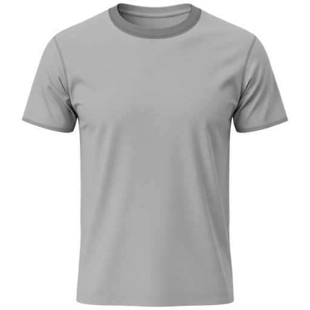
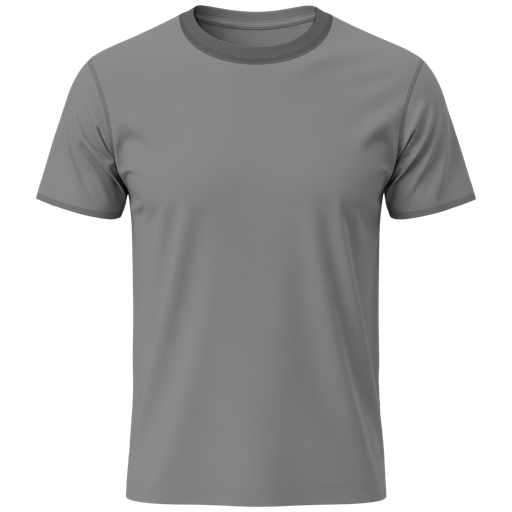

NetBet Sport · r001 · Ready for UX review


Transparent PNG and lossless WebP, in 13 sizes from 24 to 512 px. Original fabric detail, no team symbols or lettering. Select the variant for the component background.
UX Lead approval and PNG/WebP format agreement remain pending. Frontend fallback implementation is separate.